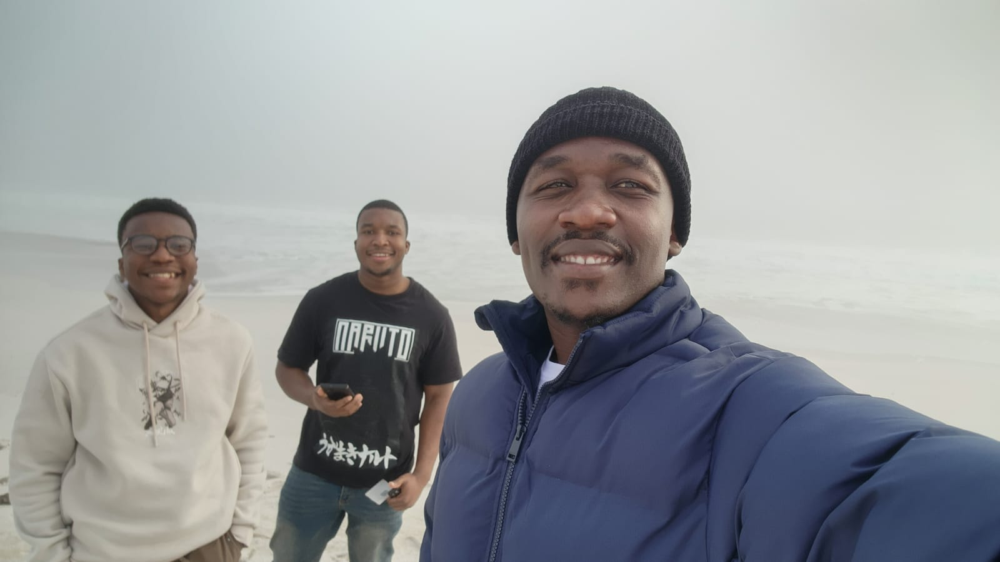
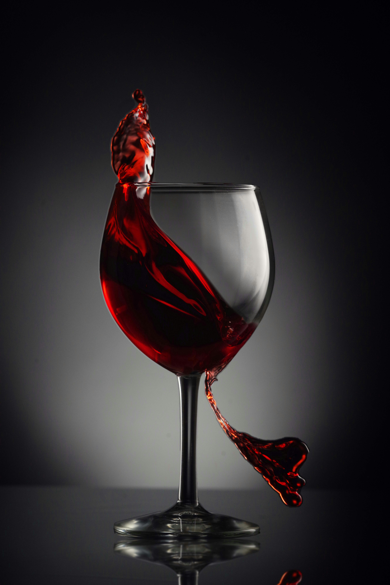

About Us - Central Wines
Central Wines was created by three Zimbabwean men. Central Wines began with the vision of three Zimbabwean men who shared more than a friendship. They shared a belief that great things could be created through passion, hard work and determination.
Our Story Begins With Three Friends

The story of Central Wines began in Zimbabwe with three friends, Chilavert Mapah, Kluivert Mapah, Thomas Ngomalala. Although they came from different backgrounds and had different experiences, they shared a strong friendship and a common belief that they could build something meaningful together.
Their journey did not begin with a vineyard or a winery. It began with conversations about the future, business, and the desire to create something they could be proud of. The three friends often spoke about building a company that would represent their values while creating opportunities for themselves and others. As their friendship grew, so did their ambition.
Read Our StoryThe First Bottle

Eventually, the years of planning, learning, and determination began to take shape. Central Wines moved from an idea on paper to a real wine brand.
The first bottles represented more than the beginning of a business. They represented the journey of three friends who had taken a shared dream and turned it into something tangible.
For Kluivert, Chilavert and Thomas, every bottle became a reminder of where they started and how far they had come.
Growing The Legacy
As Central Wines continued to develop, the founders remained focused on their original purpose: creating quality wines that bring people together.
They believe that wine has a unique ability to create moments. It can be shared around a dinner table, enjoyed during a celebration, opened to mark an achievement, or simply enjoyed with friends after a long day.
That belief became an important part of the Central Wines identity. The company continues to combine traditional winemaking values with modern ideas, always looking for ways to improve while respecting the craft behind every bottle.
Read Our StoryOur Mission
Our mission is to provide high-quality wines that create enjoyable and memorable experiences for our guests. We are committed to quality, craftsmanship and continuous improvement.
Our Vision
Our vision is to become a well-known and trusted wine brand recognised for quality and innovation. We aim to expand while building strong and lasting relationships with our customers.

Our Values
Quality
We are committed to maintaining high standards throughout the winemaking process.
Passion
Our passion for wine drives us to continuously improve and create memorable experiences.
Tradition
We respect the heritage and craftsmanship that form the foundation of winemaking.
Innovation
We embrace modern techniques and new ideas while respecting traditional methods.